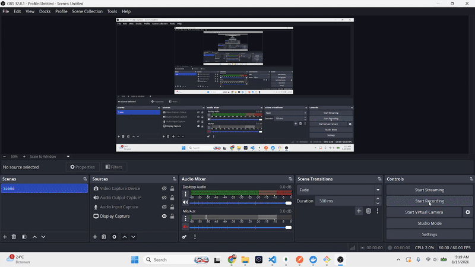

Generate full-stack apps.
Collaborate agents, ship code.
SATGAS (Scalable Agent-to-agent Task Generation & Automation Service) menyatukan multi-agent AI—planner, product spec, backend, frontend, test, security, QA, DevOps—menjadi pipeline yang memecah prompt jadi task graph, menyimpan output incremental, dan menjalankan tool dengan guardrails.
git clone https://github.com/zikazama/SATGAS
cd SATGAS
pip install -r requirements.txt
cp .env.example .env
python run.py
How SATGAS works
Dari 1 goal → task graph (DAG) → eksekusi terverifikasi → observability.
Prompt Intelligence
Masukkan deskripsi aplikasi + tech stack, SATGAS mengatur konteks dan constraints.
Multi-agent Pipeline
Planner, product spec, backend, frontend, test, security, QA, DevOps bergerak sinkron.
Guardrails & Execution
Policy engine menahan tool & network, tool adapter ambil keputusan, output diaudit.
Deliver & Store
Hasil disimpan incremental di `projects/` lengkap dengan artifacts, docs, dan runbook.
Features built for production
Skalabel, aman, dan nyaman untuk developer.
Multi-provider LLM
Bisa pakai Qwen CLI lokal atau OpenAI API tanpa mengganti codebase.
- Provider-agnostic prompt builder
- Config lewat `.env`
- Ganti LLM cukup ubah `LLM_PROVIDER`
Dynamic Tech Stack
Pilih kombinasi backend, frontend, database secara deklaratif.
- Configurasi `BACKEND_STACKS` / `FRONTEND_STACKS`
- Support Express, FastAPI, React, Vue, dan banyak lagi
- Custom stack via `config/settings.py`
Incremental Output
File disimpan otomatis saat pipeline berjalan.
- Real-time persist di folder `projects/`
- Prompt, spec, docs, hingga threat model tersedia
- Artifacts siap pakai untuk deployment dan QA
Extensible Agent Framework
Tambah atau sesuaikan agent lewat class derivasi `BaseAgent`.
- Override `build_prompt` & `process_response`
- Daftarkan di `src/agents/registry.py`
- State typing ada di `src/core/state.py`
8-agent pipeline
Orchestrator, Product Spec, Backend, Frontend, Testing, Security, QA, DevOps.
- Output: spec, code, docs, security analysis, CI
- Parallel mode default, sequential untuk debugging
- Pipeline bisa di-track & visualized via workflow utilities
Observability & Guardrails
Policy engine denim, audit log, cost per run (opsional).
- Allowlist tools + network control
- Approval gates untuk migrasi database / deploy
- Audit logs + OpenTelemetry-friendly structure
Architecture
Control plane + execution plane yang clean untuk scale-out.
Control Plane
LangGraph orchestrator, agent registry, dan workflow definition tertata di `src/core`.
Execution Plane
Agents eksekusi prompt, interaksi LLM, tool adapters (HTTP/DB/Shell).
Observability
Run history, audit logs, project artifacts, dan docs di folder `projects/`.
Open source & community
Kontribusi, diskusi roadmap, dan showcase use-case.
FAQ
Ringkas untuk pertanyaan yang paling sering muncul.
Start building with SATGAS
Clone repo, jalankan dev setup, dan coba contoh workflow.
git clone https://github.com/zikazama/SATGAS
cd SATGAS
pip install -r requirements.txt
python run.py
python -m pytest